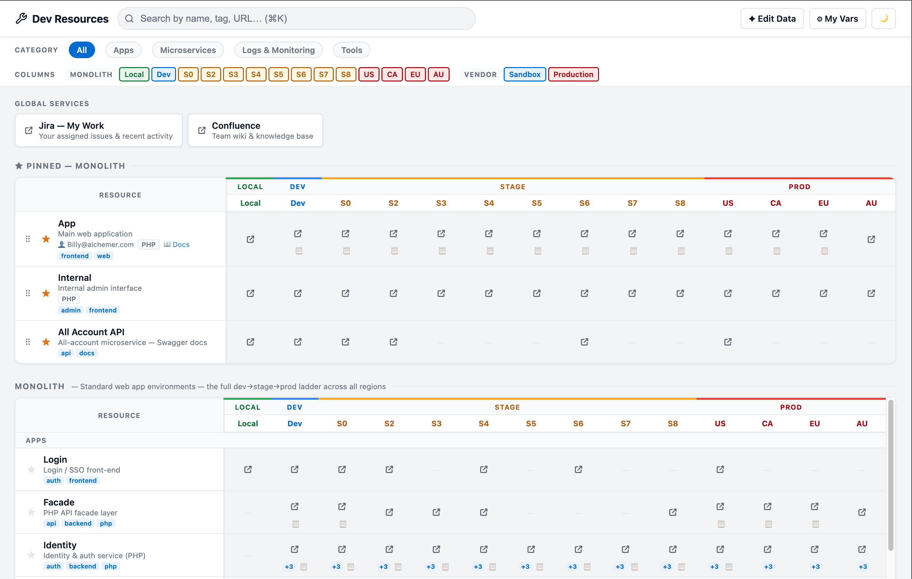
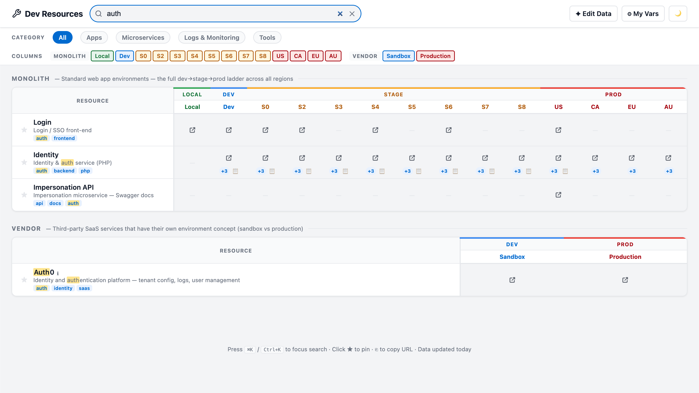
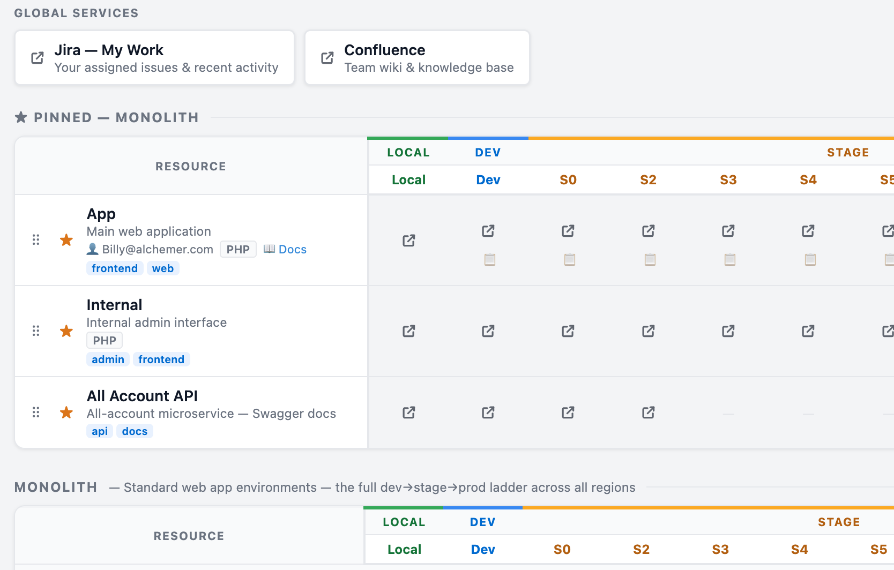
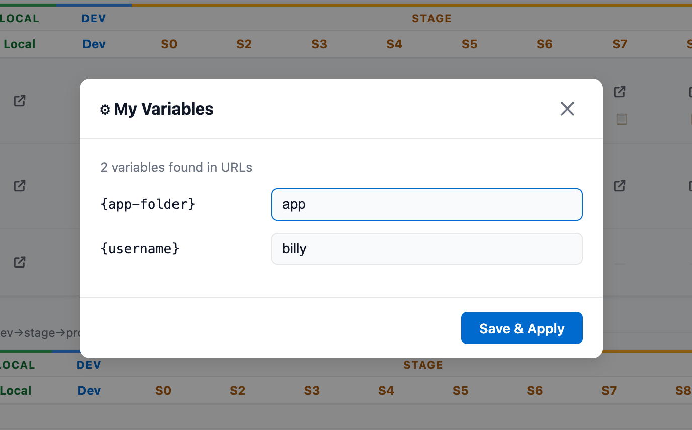
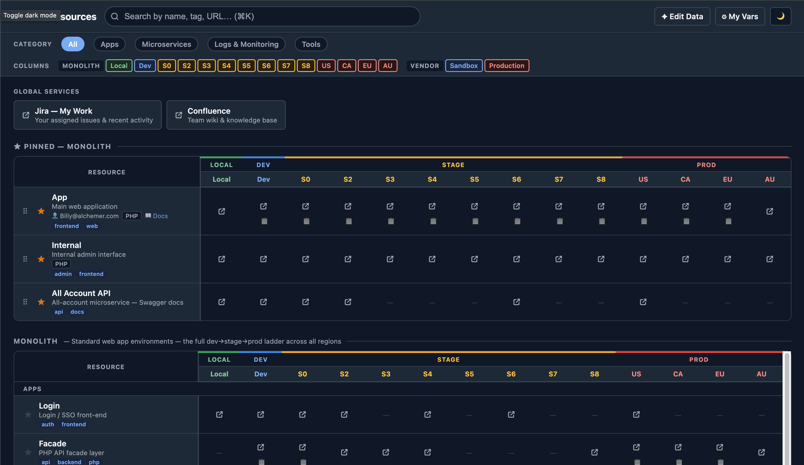
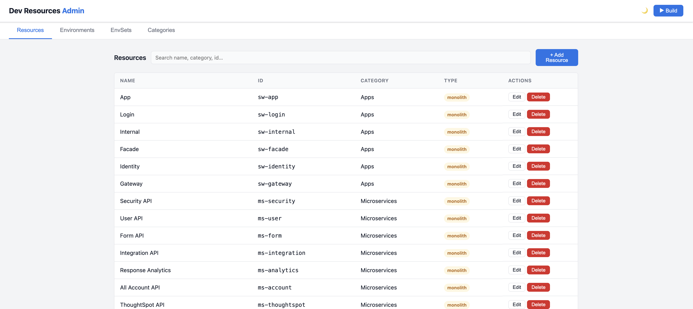
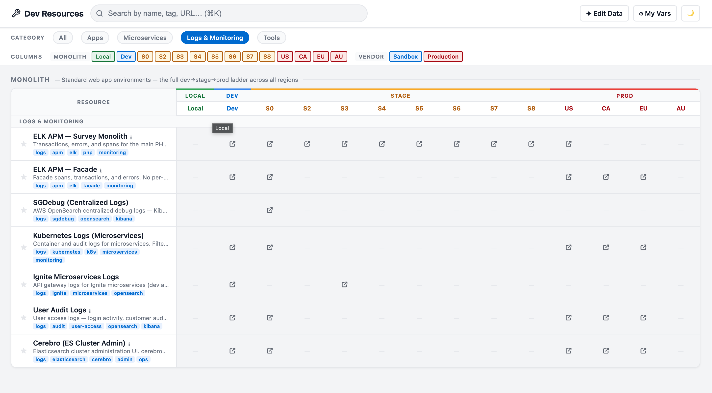

Dev Links is the internal homepage for Alchemer developers — a fast, searchable matrix of every service URL across all environments, so you stop hunting and start shipping.
Built for developers who want to move fast. No logins, no onboarding, no loading spinners — just your links, instantly.
Search across resource names, tags, descriptions, URLs, and categories simultaneously. Keyboard shortcut ⌘K focuses the search bar from anywhere.
⌘K / Ctrl+KStar any resource to pin it to the top of the page for quick access. Reorder your pins via drag-and-drop. Pins are saved between sessions.
PersistentDefine template variables like {username} or {app-folder} that auto-populate into URLs site-wide. Your personal values stay in your browser only.
Toggle between dark and light themes. Your preference is saved to localStorage and remembered across visits.
PersistentClick any URL cell or press ⎘ to copy the URL to your clipboard instantly — no selecting, no right-clicking.
ClipboardURL hash parameters encode your active filters so you can share a specific view — filtered by category, environment set, or search term — with a teammate.
ShareableFilter by Apps, Microservices, Logs & Monitoring, or Tools with a single click on the sticky toolbar. The view updates instantly.
4 CategoriesShow or hide individual environment columns — or entire environment sets (Monolith vs. SaaS Vendor) — to focus on exactly what you need.
FlexibleA built-in MCP (Model Context Protocol) server lets Claude or Cursor AI query your resources programmatically — so your AI assistant knows your dev URLs too.
MCP ServerA sticky-header matrix maps every resource to every environment. Scroll down without losing context. Color-coded environment types make Local, Dev, Stage, and Prod instantly scannable.
The resource name column stays fixed on the left, while environment headers stay pinned at the top. No matter how far you scroll, you always know what you're looking at.

Type anything — a resource name, URL fragment, tag, or category — and the table updates in real time. No round trips, no loading.

Dev Links adapts to how each developer works. Pin the resources you use most, define personal variables, and switch themes — all saved locally in your browser.
Click the ★ star icon on any resource to pin it to the dedicated "Pinned" section at the top of the page. Drag to reorder. Your pins persist in localStorage.

Some URLs contain placeholders like {username} or {app-folder}.
Open the ⚙ My Vars panel, enter your values once, and every matching URL auto-fills
across the entire app.

A carefully tuned dark theme keeps every environment color readable in low light. Toggle with the 🌙 button — your preference is remembered.

Every common action has a keyboard shortcut so you never have to reach for the mouse.
A full admin interface and schema validation ensure the data behind Dev Links stays accurate.
Run npm run admin to launch a graphical admin interface. Add, edit, or delete
resources, environments, environment sets, and categories without touching a YAML file.

Combine category filters with environment column toggles to build exactly the view you need — then share it with a deep link.
The sticky toolbar always shows which category and environments are active. Mix and match to narrow the matrix to just the rows and columns you care about.

Dev Links is already running. Open it and start finding things faster.